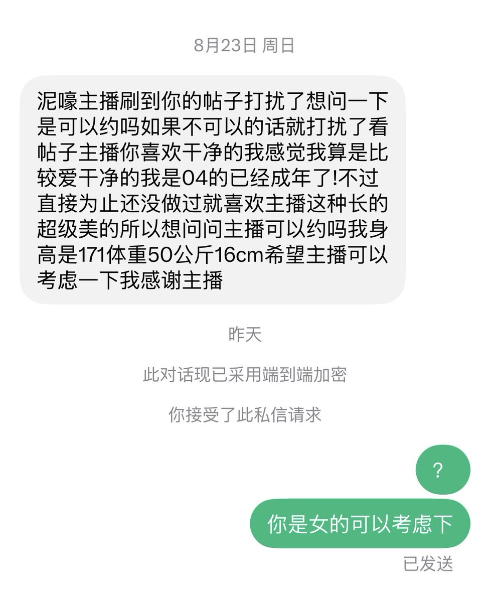

🤯凌月月🤯🙂🙂🙂
@PsycheRabbiiOwO
@SnozakiSakura 泥嚎主播刷到你的帖子打扰了想问一下是可以约吗如果不可以的话就打扰了看帖子主播你喜欢干净的我感觉我算是比较爱干净的我是04的已经成年了！不过直接为止还没做过就喜欢主播这种长的超级美的所以想问问主播可以约吗我身高是171体重50公斤16cm希望主播可以考虑一下我感谢主播（我是女的）

草莓泡芙🍀
@SnozakiSakura
虽然本喵一般不理骚扰的私信
但是看见这么逆天的，还是很难绷住😂 https://t.co/t5WWHW5KEA